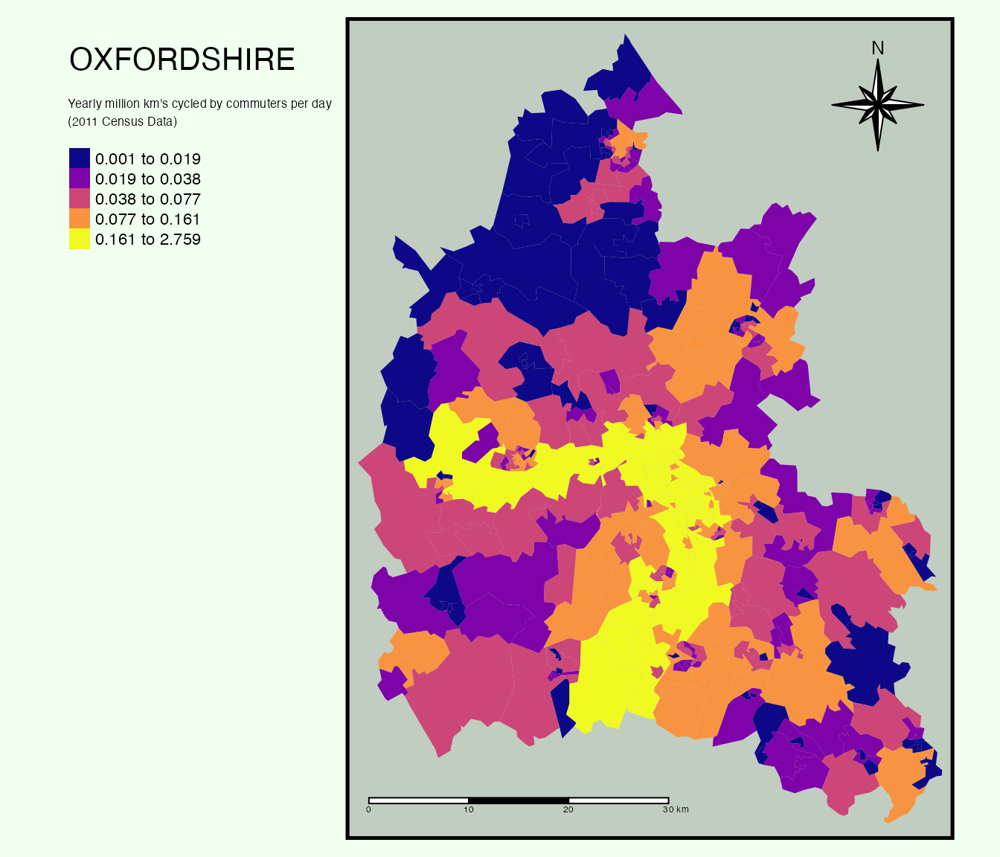
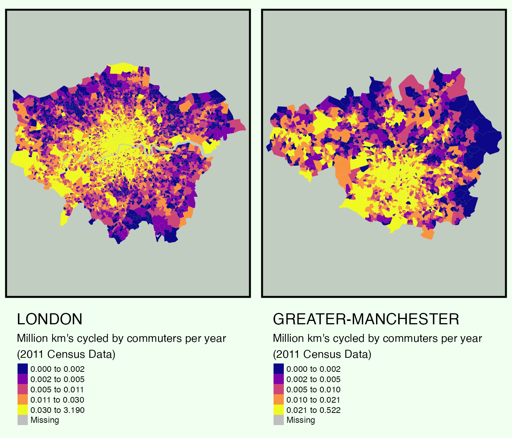
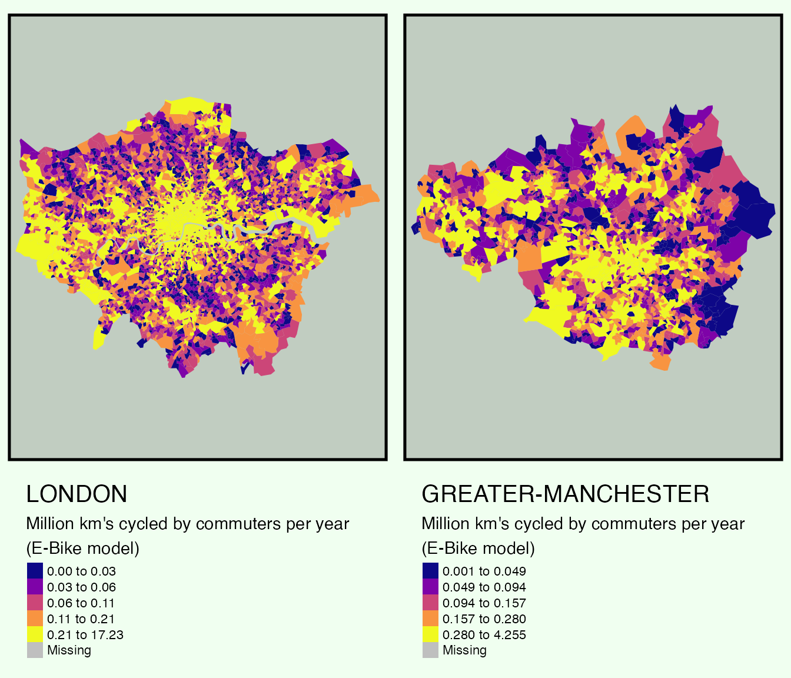

Estimating distance cycled per zone in England and Wales regions
Nathanael Sheehan
Source:vignettes/km-cycled.Rmd
km-cycled.RmdIn the context of society, cycling acts as a vessel to mobilise citizens to navigate through spatial geography in a sustainable fashion. In doing so, cycling obtains numerous socio-spatial benefits both at the micro (individual health benefits from active transport) and macro (lower pollution from vehicles) scale. With the ambition of building a sustainable future, the PCT project promotes cycle uptake through providing open tools for policy-makers, transport planners and academics to plan future cycle infrastructure for the built environment.
Using data from the 2011 census and models built into the PCT package, this article asks the question of “How many km’s per LSOA do commuters cycle through each year?”. The results of which provide valuable insight into future sustainable transport planning decisions and highlight the versatility of the PCT package through a reproducible method.
Estimating distance cycled for a region based on 2011 census data
The PCT package permits an easy method for fetching road network and commuting origin/destination data for any region in England and Wales. This data will be used as the basis for understanding the current context of cycling for a given region (A definition of regions can be found in this earlier article). For this first example, we will apply the pct method to the region of Oxfordshire. To kick things off, we use the get_pct_rnet to retrieve road network data for the region. This data is then used to calculate the length of the road network cycled using base r functions.
#Get road network for preselected regin
rnet = pct::get_pct_rnet(region = "oxfordshire")
#Calculate road length
rnet$segment_length = as.numeric(sf::st_length(rnet))
#Calculate daily km's cycled
rnet$m_cycled_per_working_day = rnet$segment_length * rnet$bicycleSimples! Now we can use the get_pct_zones function to get LSOA geographies in order to calculate the number of km’s cycled per day through each LSOA.
# Get road network for preselected regin
zones = pct::get_pct_zones(region = "oxfordshire")
summary(sf::st_is_valid(zones))## Mode FALSE TRUE
## logical 1 406
zones = sf::st_make_valid(zones)
summary(sf::st_is_valid(zones))## Mode TRUE
## logical 407
cycled_m_per_zone = aggregate(rnet["m_cycled_per_working_day"], zones, FUN = sum)While this is great information, it doesn’t provide answer the long term question of how many distance are cycled per year. In order to achieve this, we must multiple the number of trips per day by the number of days in a standard working year (200) and divide by a million. Once again, this is achieved using base r functionality.
zones$mkm_cycled_for_commuting_per_year_estimated = cycled_m_per_zone$m_cycled_per_working_day *
2 * 200 / # estimate of trips days per year, morning and afternoon
1e9With this calculated, we can now answer our question and visualize yearly km’s cycled using tmap.
tm_shape(zones) +
tm_fill(
col = "mkm_cycled_for_commuting_per_year_estimated",
style = "quantile",
palette = "plasma",
title = "Yearly distance cycled by commuters per day\n(2011 Census Data)",
legend.size.is.portrait = TRUE
) +
tm_layout(
title = "OXFORDSHIRE",
title.position = c("left", "top"),
bg.color = "honeydew3",
outer.bg.color = "honeydew",
legend.stack = "horizontal",
legend.outside = TRUE,
legend.outside.position = "left",
frame.lwd = 5
) 
Wow, that’s a lot of miles cycled! The plot breaks down the number km’s cycled by quartiles and thus paints the picture of where cycling is most prominent. In the context of Oxfordshire, the map depecits the region obtainaing a rather high cycle uptake; with its spatial distribution primarily in the centre of the region.
Comparing Regions
Now say we wanted to compare the results of Oxfordshire, with its regional neighbor Cambridgeshire. This can be achieved by wrapping the previous method into a function.
pct_zones_rnet_current = function(region_name) {
# Get road network for preselected regin
rnet = pct::get_pct_rnet(region = region_name)
# Calculate road length
rnet$segment_length = as.numeric(sf::st_length(rnet))
# Calculate daily km cycled
rnet$m_cycled_per_working_day = rnet$segment_length * rnet$bicycle
# Convert to centroids to avoid double counting flows that cross zones
rnet_centroids = sf::st_centroid(rnet)
# Get LSOA spatial data
zones = sf::st_make_valid(pct::get_pct_zones(region = region_name))
# Calculate cyced miles per zone
cycled_m_per_zone = aggregate(rnet_centroids["m_cycled_per_working_day"], zones, FUN = sum)
# Calculate miles cycled per year from commuting
zones$mkm_cycled_for_commuting_per_year_estimated = cycled_m_per_zone$m_cycled_per_working_day *
2 * 200 / # estimate of trips days per year, morning and afternoon
1e9
# Plot results
tmap_mode("plot")
tm_shape(zones) +
tm_fill(
col = "mkm_cycled_for_commuting_per_year_estimated",
style = "quantile",
palette = "plasma",
title = "Million km's cycled by commuters per year\n(2011 Census Data)",
legend.size.is.portrait = TRUE
) +
tm_layout(
title = toupper(region_name),
title.position = c("left", "top"),
bg.color = "honeydew3",
outer.bg.color = "honeydew",
legend.stack = "horizontal",
legend.outside = TRUE,
legend.outside.position = "bottom",
frame.lwd = 5
)
}With our function built, we can now easily compare regional differences.
oxfordshire_results = pct_zones_rnet_current(region_name = "oxfordshire")
cambrideshire_results = pct_zones_rnet_current(region_name = "cambridgeshire")
tmap_arrange(oxfordshire_results, cambrideshire_results, ncol = 2)
In comparison to Oxfordshire, Cambridgeshire spatial distribution of km’s cycled exhibit a high number of cycling not only in the centre of the region. While Oxfordshire obtains a zone with a higher number of km’s cycled through it, in general Cambridgeshire displays a higher number in its quartile range. Interesting!
Now lets say we wanted to compare two cities. Lets take London and Greater Manchester.
london_results = pct_zones_rnet_current(region_name = "london")
gm_results = pct_zones_rnet_current(region_name = "greater-manchester")
#tmap_mode("view")
tmap_arrange(london_results, gm_results, ncol = 2)
Jheeze! The maps provides insight at a highly granular level. Both Greater Manchester and London have similar quartile ranges and are fairly monocentric, however, LSOA’s in London such as E01032739 obtain billions in km’s cycled per year; likely due to working population differences. Nonetheless, outer LSOA’s in both Greater Manchester and London also feature in the highest quartile, representing that cycle uptake is not dominant solely in the centre of the regions.
Using PCT models to visualize potential cycle uptake
While the results based on the 2011 census provide interesting and valuable results, a lot has changed since 2011 and other scenarios should be explored. The PCT package features numerous models (e.g. govtarget_slc,gendereq_slc and ebike_slc). In this example, lets examine London and Manchester again, but this time, lets use the PCT E-bike model scenario. The PCT E-Bike model assumes commuters will use e-Bikes for longer or hillier trips (based on data from Dutch and Swiss travel surveys). In order to model this, we will build a function similar to what we used for the census data, but change the daily miles cycled to use the ebike_slc column.
pct_zones_rnet_ebikes <- function(region_name) {
# Get road network for pre-selected region
rnet = pct::get_pct_rnet(region = region_name)
# Calculate road length
rnet$segment_length = as.numeric(sf::st_length(rnet))
# Calculate daily miles cycled
rnet$m_cycled_per_working_day = rnet$segment_length * rnet$ebike_slc
# Convert to centroids to avoid double counting flows that cross zones
rnet_centroids = sf::st_centroid(rnet)
# Get LSOA spatial data
zones = sf::st_make_valid(pct::get_pct_zones(region = region_name))
# Calculate cycled miles per zone
cycled_m_per_zone = aggregate(rnet_centroids["m_cycled_per_working_day"], zones, FUN = sum)
# Calculate km cycled per year from commuting
zones$mkm_cycled_for_commuting_per_year_estimated = cycled_m_per_zone$m_cycled_per_working_day *
2 * 200 / # estimate of trips days per year, morning and afternoon
1e9
#Plot results
tmap_mode("plot")
tm_shape(zones) +
tm_fill(
col = "mkm_cycled_for_commuting_per_year_estimated",
style = "quantile",
palette = "plasma",
title = "Million km's cycled by commuters per year\n(E-Bike model)",
legend.size.is.portrait = TRUE
) +
tm_layout(
title = toupper(region_name),
title.position = c("left", "top"),
bg.color = "honeydew3",
outer.bg.color = "honeydew",
legend.stack = "horizontal",
legend.outside = TRUE,
legend.outside.position = "bottom",
frame.lwd = 5
)
}With our E-Bikes function built, we can map the results to visualise the effect an E-bike scenario may have on these two cities.
london_results_ebikes = pct_zones_rnet_ebikes(region_name = "london")
gm_results_ebikes = pct_zones_rnet_ebikes(region_name = "greater-manchester")
#tmap_mode("view")
tmap_arrange(london_results_ebikes, gm_results_ebikes, ncol = 2)
Wow! The maps show how an E-Bike scenario could increase cycle uptake by ~500%. As this model illustrates, an E-Bike scenario would mean more LSOA’s would be in the highest quartile of distance cycled. This would mean safer roads, cleaner air and a more sustainable future.
Conclusions and next steps
As demonstrated, the PCT packages provides easy methods to visualize cycle potential. This article has briefly shown how you can use the PCT package models to understand what future cycle uptake could look like and how to calculate the number of km’s cycled per year at a granular level. If this article is of use/interest, why not try for your local region showing the potential based on different models. You can also try the following resources (in R and online):
- Have a play with the PCT web application
- For more of a deep dive into the methods, see the pct_training vignette
- See the pct-international to see how to apply the methods internationally
We’re interested to know how you’ve used the methods/data so please get in touch on social media and GitHub letting us know how get on. Any comments/contributions to this analysis: welcome.